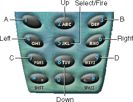

Release NotesMIDP Reference Implementation
|
MIDP (Mobile Information Device Profile) is part of the Java™ 2 Platform, Micro Edition (J2ME™). MIDP is built on top of the Connected Limited Device Configuration (CLDC) and defines the Java application environment for mobile information devices (MIDs), such as mobile phones and personal digital assistants (PDAs). This product, the MIDP Reference Implementation is for developers who will be porting MIDP to mobile information devices.
The MIDP Reference Implementation, Version 2.0 FCS, implements the specification from the Mobile Information Device Profile 2.0 [JSR-000118]. The MIDP 2.0 specification is based on the MIDP 1.0 specification and provides backward compatibility with MIDP 1.0 so that MIDlets written for MIDP 1.0 can execute in MIDP 2.0 environments. For detailed information on both MIDP specifications, see http://jcp.org.
MIDP runs a device emulator on your desktop system. An application that runs in a MIDP environment (whether in an emulator or on a device) is called a MIDlet. One or more MIDlets packaged together for distribution are called a MIDlet suite.
Compared to MIDP 1.0, the MIDP Reference Implementation, Version 2.0 FCS, has the following new features:
The supported platform for this release is Microsoft Windows 2000. Systems running the Solaris™ Operating Environment (OE) and the Linux operating system are not officially supported. This section details the hardware and software requirements for the supported and unsupported systems:
The hardware requirements are:
The software requirements are:
In addition, the build environment requires:
The MIDP Reference Implementation was tested on a Gateway PII, 350 MHz
system with 128 MB RAM and a Creative Audio PCI (ES1371/ES1373) sound card
running Windows 2000.
The hardware requirements are:
The software requirements are:
In addition, the build environment requires:
The MIDP Reference Implementatnion was tested on a Sun Ultra 2 workstation running Solaris 8 (2.8) with 1024 MB of RAM and a CS4231 sound device.
The hardware requirements are:
The software requirements are:
In addition, the build environment requires:
The MIDP Reference Implementation was tested on a Dell PIII 733 MHz system
with 256 MB RAM running Linux RedHat 7.2 (kernel version 2.4.7-10). The
sound system consists of a Creative SoundBlaster Live! sound card with the
Creative EMU10K1 PCI Audio Driver, version 0.6, 16:53:07 Aug 22 2000.
Unzipping the distribution creates the directory midp2.0-FCS with the subdirectories:
See Installing MIDP for installation instructions.
The following keys can be used instead of the mouse to operate the graphical user interface (GUI) of the device emulator:
| Button | Button Function | Keyboard Equivalent |
|---|---|---|
| Up, down, left, and right navigation buttons | To navigate (move the highlight on the screen), and for game controls (up, down, left, and right) |
Arrow keys |
| Select button | To make a choice (for example, to choose an element from a
list), and for game controls (select/fire) |
Enter key |
| End Call button | To exit a MIDlet | F10 key |
| Clear button |
To remove the character to the left of the cursor in a text box or text field (Press and hold to remove all the text.) |
Backspace key |
| Left soft button | To select any command assigned to the left soft button (the command label will be at the bottom left corner of the emulator's screen) |
F1 key |
| Right soft button | To select any command assigned to the right soft button (the command label will be at the bottom right corner of the emulator's screen) |
F2 key |
|
Standard phone keypad:
|
To enter letters, numbers, and other supported characters; also to enter game controls, as shown in the following figure:  |
The corresponding letter, number, #, *, shift, and space keys |
|
|
||
In addition, the HTML documentation is accessible.
The MIDP 2.0 Specification warns that blocking the
commandAction method of the CommandListener
interface might block the virtual machine (VM). The specification
provides this warning because it requires the event handler to process
an event to completion before moving on to the next one. If an
application blocks the event thread, the user will not be able operate
the MIDlet and will think that the VM is hung. (Note that the VM might
appear to be hung but, if there are multiple threads, the other threads
are still running.)
As a practical matter, it is most important to heed the warning
against calling blocking methods when you are considering calling
security-sensitive APIs. Merely updating a Displayable or
moving from one screen to another is unlikely to cause a problem. When
you use security-sensitive APIs the system might need to ask the user to
grant a permission. Because the permission request is done on a new
screen, a permission request is a new event. The event thread cannot
process that permission-request event, however, because it is blocked
waiting for the security-sensitive call to complete. The event thread is
deadlocked.
The correct way to perform blocking operations, such as calls to use the network, is to spawn a new thread. When it is run in a new thread, the blocking call no longer blocks the event thread. The event thread is free to process the next event. Using the example in the previous paragraph, that next event could be a permission request. The MIDlet avoided the deadlock.
The following example shows how to correctly spawn the thread that makes blocking calls:
public void commandAction(Command c, Displayable s) {
synchronized (this) {
currentCommand = c;
new Thread(this).start();
}
// Let the run method get into its synchronized block.
try {
Thread.sleep(1);
} catch (InterruptedException e) {
// ignore
}
}
public void run() {
synchronized (this) {
if (currentCommand == exitCommand) {
destroyApp(false);
notifyDestroyed();
} else if (currentCommand == goCommand) {
// Make a network connection
...
}
}
}
Note that making blocking calls in a separate thread was good practice in MIDP 1.0.x releases too. In those release, however, making calls to access the network did not require permission from the user. As a result, they did not cause deadlocks.
/usr/bin must appear before /usr/ucb
on your PATH environment variable. If they are in the reverse
order, the build environment tries to use the tr command from
the /usr/ucb directory and the build fails with the error
message,
No rule to make target `obj/lcWi'
-Xdescriptor option) is no longer a feature of the MIDP
Reference Implementation on any platform. MIDlets must be packaged into a
Java Archive (JAR) and Java Application Descriptor (JAD) file pair and
downloaded from a URL. You can run a packaged MIDlet with the device
emulator's graphical user interface (install the MIDlet suite, if
necessary, then launch it), or with the command line (using the
midp command's -autotest,
-transient, or, if the MIDlet suite is installed, the
-run switch). See Using MIDP for more information.% chmod 666 /dev/ttyS0Another solution is to update the configuration file that controls these permissions,
/etc/security/console.perms. See your Linux documentation for
more information. microedition.commports parameter in the midpInstallDir\lib\system.config
file. You can change this value permanently by editing the file. You can also
set the value on the command line using the -D argument, as shown
in the following example. The example, which is for a Unix®
system, has the MIDP executable run with no serial ports:% midp -Dmicroedition.commports=0See Using MIDP for more information on setting attribute values.
Appendix C, "Reference Documentation for com.sun.midp.ssl,"
in Porting MIDP has two links that are redirected to the search page
at docs.sun.comSM.
The following list shows those URLs, along with alternative links you can
use instead.
http://docs.iplanet.com/docs/manuals/security/sslin/index.htm – The
substitute URL is
http://docs.sun.com/source/816-6156-10/index.html.http://docs.iplanet.com/docs/manuals/security/pkin/index.htm – The
substitute URL is
http://docs.sun.com/source/816-6154-10/index.html.The following table shows the bug numbers and synopses of bugs that were open at this release:
| BUG ID | CATEGORY | DESCRIPTION |
|---|---|---|
| 4768822 | emulator | No keyReleased events for certain keys in GameCanvas |
| 4682193 | I18N | Asian character can not be used as Project Name or MIDlet name. |
| 4762500 | networking | IOE thrown sending POST requests to URLs that don't accept them, from a proxy |
| 4776825 | networking | Push connection filter matches address longer than filter string |
| 4745913 | other | Build fails on Solaris OE if /usr/ucb is in
PATH ahead of /usr/bin. |
| 4770320 | other | Exception is thrown if internal.config or
system.config are in DOS format. |
| 4718933 | rms | Record compaction is done only when a record store is closed. |
| 4698131 | ui | Light gray is drawn as white on some Windows configurations. |
| 4745993 | ui | StringItems cause unnecessary row breaks under certain conditions. |
| 4756139 | ui | The inputMode indicator is never set to
'none'
|
| 4759088 | ui | Key repeat is not implemented on specified components. |
| 4762338 | ui | Display.setCurrent can call into the application
while holding LCDUILock |
| 4766164 | ui | "Indefinite-Running" gauge animation pauses under certain conditions. |
| 4767138 | ui | AlertType ALARM, ERROR,
WARNING: playSound played only after first
Alert |
| 4767223 | ui | Popup choice group width is fixed and cannot be changed. |
| 4740143 | usability | Long elements with TEXT_WRAP_OFF not implemented as
per HI spec |
|
|
||
Copyright © 2002 Sun Microsystems, Inc. All rights reserved.